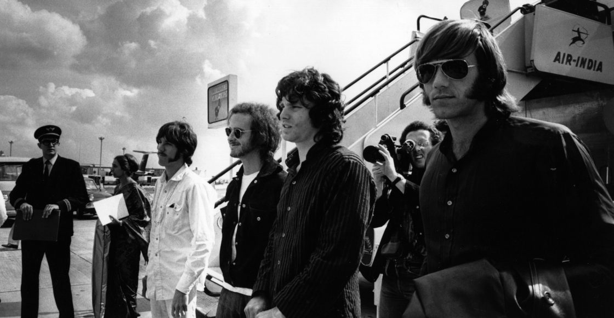

Classic Rock Tour
Classic Rock Tour
El rock clásico es un formato o clasificación usado en el contexto de la radio y la industria fonográfica estadounidenses, el cual se ha empleado para categorizar artistas de blues rock, hard rock, rock progresivo y soft rock surgidos desde fines de los años 60 hasta la década de 1980, mayormente aquellos que alcanzaron masividad. Esta denominación comercial es un derivado del llamado Album oriented rock más que un estilo en sí mismo, ya que todas las bandas y artistas de Rock clásico poseían y poseen estilos propios que los identifican, e incluso muchos pertenecen a géneros diferentes.
La estación de radio KRBE de Houston (Texas) fue la primera, en 1983, en utilizarel término como se lo conoce actualmente; su programación consistía exclusivamente en canciones de artistas, desde mediados de los 60 hasta mediados de los 70, la fórmula pronto alcanzó popularidad y fue copiada por otras estaciones (las llamadas "Classic rock radios"), pasando el término (Classic rock) también a la industria como una etiqueta que designa artistas comercialmente establecidos que tuvieron su época dorada en aquellos tiempos (1960s y 70s).
El término Classic rock no debe ser confundido con los artistas del Rock and roll clásico de la década de 1950, ya que fue acuñado con posterioridad, y no está específicamente relacionado con estos.

1943 al 1971
James Douglas «Jim» Morrison (Melbourne, Estados Unidos, 8 de diciembre de 1943-París, Francia, 3 de julio de 1971) fue un cantautor y poeta estadounidense, célebre por ser el vocalista de la mítica banda de rock The Doors. Debido a sus canciones, personalidad y actuaciones salvajes, es considerado por críticos y fans como uno de los cantantes más icónicos e influyentes de la historia del rock.
THE DOORS

1962 al Presente
The Rolling Stones es una banda británica de rock originaria de Londres. La banda se formó en abril de 19622 por Brian Jones, Mick Jagger, Keith Richards, Bill Wyman, Ian Stewart y Charlie Watts.Sus primeras producciones incluían versiones y temas de blues, rock and roll y R&B norteamericano.
THE ROLLING STONES

1965 al 1995
Pink Floyd fue una banda de rock británica, considerada un icono cultural del siglo xx y una de las bandas más influyentes en la historia de la música, que obtuvo gran popularidad gracias a su música psicodélica que evolucionó hacia el rock progresivo y rock sinfónico con el paso del tiempo. Es conocida por sus canciones de alto contenido filosófico, la experimentación sónica, las innovadoras portadas de sus discos y sus elaborados espectáculos en vivo.
PINK FLOYD

1943 al Presente
AC/DC es un grupo de hard rock australiano formado en 1973 en Sídney, Australia, por los hermanos de origen escocés Malcolm y Angus Young. Sus álbumes se han vendido en un total estimado de 200 millones de copias, embarcándose en giras multitudinarias por todo el mundo, y sus éxitos han musicalizado varias producciones cinematográficas sobresalientes. Son famosas sus actuaciones en vivo, resultando vibrantes.
AC/DC
Los años 1954 y 1955 fueron especialmente importantes para la generalización del rock and roll conformándose como nuevo género musical. Ese año Bill Haley grabó Rock Around The Clock que se volvería al año siguiente en el primer éxito masivo estadounidense y mundial del rock and roll, tras haber sido incluido como escena inicial de la película "Semilla de maldad" (Blackboard Jungle). Simultáneamente Elvis Presley grababa su primera canción That's All Right (Mama). A fines de año Alan Freed, un disc-jockey que venía promoviendo el nuevo estilo musical desde sus programas de radio, impuso el término "rock and roll". Finalmente ese mismo año Leo Fender puso a la venta la guitarra eléctrica telecaster, que se volvería sinónimo de rock and roll y que sería incluida definitivamente en el nuevo estilo por Chuck Berry al año siguiente. Por otro lado Little Richard venía grabando canciones desde 1951, aunque sinmayor éxito, y que alcanzaría a fines de 1955 su primer hit con Tutti Frutti. En síntesis: Bill Haley, Elvis Presley, Chuck Berry, Alan Freed, Little Richard y la stratocaster, marcaron el momento de difusión mundial del rock and roll, resultado de un proceso que ya llevaba una década gestándose. Ante el 50º Aniversario de la difusión mundial del rock and roll, la revista Rolling Stone decidió marcar un acontecimiento que simbolizara ese momento, denominándolo con el título espectacular de "primera canción de rock and roll", aunque estrictamente el mismo fuera incorrecto y cuestionable.
En ese marco temporal 1954-1955 se sucedieron cuatro éxitos: That's All Right (Mama), lanzada el 5 de julio de 1954, importante por haber sido el primer disco de Elvis Presley, aunque su éxito masivo recién vendría unos años después. Rock Around The Clock, lanzada en mayo de 1954, por Bill Haley, pero cuya importanciaradica en haberse vuelto el primer hit masivo mundial del rock and roll, cuando fue incluido como escena inicial de la película "Semilla de maldad" (Blackboard Jungle), estrenada el 25 de marzo de 1955. Maybellene primer single y primer hit de Chuck Berry, lanzada en julio de 1955, más representativa del rock and roll negro original y del papel de la guitarra eléctrica, pero algo tardía frente a las otras dos. Tutti Frutti, primer hit de Little Richard y una de las pioneras indudables del rock and roll, lanzada en septiembre de 1955.
Finalmente Rolling Stone decidió unilateralmente y sin demasiadas gestiones declarar que That's All Right (Mama), de Elvis Presley fue la primera canción de rock and roll. El hecho ha sido muy controvertido por diversos sectores. En parte porque habiendo sido el rock and roll un género musical de origen indiscutiblemente negro, tanto por parte de los músicos como del público, la elección de una canción cantada por un músico blanco, por importante que luego haya sido, ha sido considerada como una actitud con raíces racistas.
Surgen The Beatles y la denominada "Invasión británica": The Rolling Stones, The Kinks, Small Faces, The Who, The Yardbirds, The Animals. Nace el movimiento mod, liderado por varios de estos grupos. En Estados Unidos se inicia el denominado "surf rock", género del que The Beach Boys son los principales exponentes, con melodías pegadizas y letras que hacen referencia al estilo de vida playero y despreocupado de la juventud de clase media estadounidense. Bob Dylan utiliza la guitarra eléctrica en canciones con base folk, creando el folk rock. Le seguirían The Byrds, Simon and Garfunkel o Crosby, Stills and Nash. El rock psicodélico nace en California con Grateful Dead, Jefferson Airplane, The Doors, The Turtles, Love y Iron Butterfly o el pop rock influenciado por el hippismo de The Mamas and The Papas y Association. En el Reino Unido es asimilado por los grupos de la "Invasión Británica", encabezados por The Beatles y su Revolver, su Sgt. Pepper's Lonely Hearts Club Band y su Magical Mystery Tour, entre otros. The Rolling Stones con Their Satanic Majesties Request. Surgen también otras bandas como Pink Floyd, Traffic, Jethro Tull y Soft Machine, que más tarde darían lugar al rock progresivo. Se populariza el uso del sintetizador Moog, el mellotron y el sitar. Muchos de estos grupos tienen una fuerte tendencia al blues rock, de la que serían grandes exponentes Janis Joplin y su banda Big Brother & The Holding Company, además de formaciones como Canned Heat. Jimi Hendrix, Keith Richards, George Harrison y Eric Clapton con Cream revolucionan la forma de tocar la guitarra eléctrica. Frank Zappa y la banda Mothers Of Invention fueron una temprana muestra del rock progresivo y sinfónico más inclasificable e iconoclasta, con influencias de Edgar Varèse y Stravinsky, la comedia, el dadá y las referencias contraculturales. A mediados de la década, Creedence Clearwater Revival y Buffalo Springfield, grupo del que saldría Neil Young, mantuvieron el lado más clásico y purista del rock and roll, con un rock de impronta añeja y melodías trabajadas. En 1967 se publicó el primer disco de Leonard Cohen, que consolida la figura de cantautor y crooner del rock e influye en muchos artistas que más tarde desarrollarían este concepto. En 1969 el primero en solitario de Neil Young, que aúna lirismo acústico con distorsión y crudeza, aderezada con espíritu psicodélico. Esta fórmula inspiraría a varias generaciones de músicos, y muy en concreto a la generación grunge. También en 1969 publica Led Zeppelin sus dos primeros álbumes. The Velvet Underground; el lado más oscuro, lírico, y artístico del rock; inspirados por "The Factory" de Andy Warhol dejan una huella indeleble en el rock, influyendo en el punk, el rock gótico, y en toda la escena posterior alternativa. Su líder, Lou Reed, evolucionaría posteriormente en su carrera solista, a caballo entre la poesía y el rock, tocando glam rock en los 70 con discos como Transformer o Berlín. King Crimson en 1969 lanza su primer disco, In the Court of the Crimson King, considerado el primer álbum de rock progresivo.